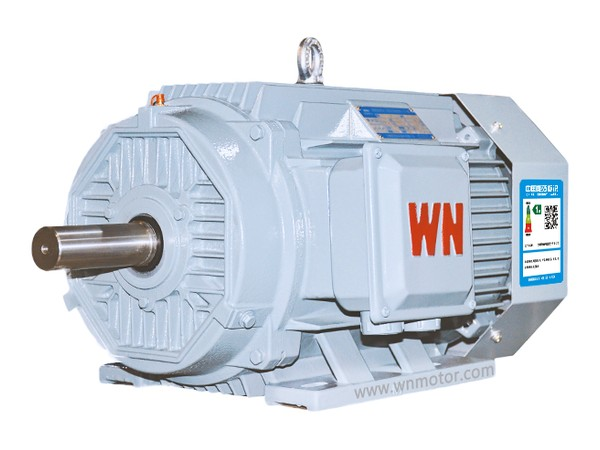

YE5 · IE5
0.75–375 kW · 机座 80–355
电机 · IE3–IE5 · 0.12–2,500 kW
低压 0.12–375 kW 高能效异步电动机、6/10 kV 高压 160–2,500 kW 异步电动机，以及 0.55–450 kW 永磁同步电动机。每提一档能效，电机损耗就去掉 15%~20%——两档的差价，往往在泵回本之前就赚回来了。
连续运行的工况里，电机比撬上任何部件转得都久，而且它以出厂时的能效等级一直转下去。一台水力效率 85% 的泵，配的可能是效率 89% 的电机——客户买到的是机组效率，不是单看泵的效率。
所以我们把驱动端和泵端一起报：泵、电机、联轴器与护罩、底座，工况有变化时再加变频器。一套图纸、一家负责、一个质保。
每提一档能效，损耗去掉约五分之一。IE3→IE4 约减 15%~20% 电机损耗，IE4→IE5 再减约 20%。连续工况下这是最便宜的一度电：不用土建、不用改管路，停机时间就是换机那几小时。
下列低压系列符合 IEC 60034 尺寸：同一机座号＝同一轴中心高、同一底脚孔距、同一法兰止口。YE3 或 YX3 拆下来，YE5 装上去，底座不动、联轴器重新对中即可。
型谱
本页型谱按皖南电机（Wannan Electric）样本编排——这是国内这几个机座号的主流型谱。您图纸或备件清单上写的是 YE3-280M-4 还是 TYCP-315，都能直接在下表找到对应规格。
第一类
鼠笼转子、全封闭风扇冷却、铸铁机座。泵、风机、压缩机、输送机、破碎机的默认驱动——也是唯一能直接落在原底座上、不动传动方式的品类。
| 系列 | 能效等级 | 功率 | 机座号 | 极数 | 典型用途 |
|---|---|---|---|---|---|
| YE5 | GB 18613-2020 1 级（IE5） | 0.75–375 kW | 80–355 | 2、4、6、8 | 电费占比高的连续工况——锅炉给水、矿井排水、曝气、外输 |
| YE4 | GB 18613-2020 2 级（IE4） | 0.37–375 kW | 63–355 | 2、4、6、8 | 交期或预算不取 IE5 时的实用默认档 |
| YE3 | GB 18613-2020 3 级（IE3） | 0.12–375 kW | 63–355 | 2、4、6、8、10 | 通用场合；在役机队的同规格替换 |
| YBX5 | GB 18613-2020 1 级（IE5），Ex d | 0.18–375 kW | 80–355 | 2、4、6、8 | 可燃气体环境——瓦斯增压、炼化、喷涂与溶剂车间 |
| YKK | 高效率，6/10 kV | 160–2,500 kW | 355–630 | 2–12 | 380 V 的电缆与开关柜不再划算的大功率泵、风机驱动 |
标准：380 V / 50 Hz（其他电压、60 Hz 可定制）· S1 工作制 · IP55 · F 级 · IC411 · B3 / B5 / B35 / V1 安装。同平台派生：变频调速（YVF2 / YXVF）、电磁制动、变极多速、低振动低噪声、船用、辊道、不锈钢机壳。
算一遍就明白
110 kW、4 极，IE3 与 IE5 的效率差约 1.1 个百分点。听着不多，乘上每年 8,000 小时：约 1.3 kW 的损耗被永久去掉，一年约 10,400 kWh，按 0.10 美元/kWh 是每年约 1,040 美元——一台电机。
效率值为示意口径；具体型号与电压的实测效率以型式试验数据为准，随数据表出具。
高压
大约 300 kW 以上，380 V 电机的电缆与开关柜反而成了安装里最贵的一块。YKK 系列用 6 kV 或 10 kV，全钢板焊接机座、顶部空空冷却器、VPI 真空压力浸漆——160–2,500 kW，2–12 极，IP44/IP54/IP55，F/H 级，IMB3 / IMB35。
第二类
转子自带永磁体，不靠定子励磁。同机座号下效率更高、功率密度更大，而且部分负载段的高效区宽得多——泵和风机恰恰常年跑在部分负载。
| 系列 | 能效等级 | 功率 | 机座号 | 电压 | 冷却方式 |
|---|---|---|---|---|---|
| TYCP | GB 30253-2013 1 级 | 0.55–375 kW | 80–355 | 380 V | IC411；≥55 kW / 3,000 rpm 为 IC416 |
| TYCP2 | GB 30253-2013 1 级 | 0.55–450 kW | 80–355 | 380 V | IC411 |

异步电机的转子要靠定子励磁，这股励磁电流不管轴上有没有负载都在耗。永磁转子自带磁场，所以效率曲线在 25%~120% 负载区间几乎是平的。泵常年跑在设计流量的 60%~80%，省下来的就在这一段。
代价要说清楚：永磁电机必须配变频器运行，不能直接合闸启动。现场原本没有变频器，就得加驱动，回收期要重算——多数情况仍然划算，但必须算，不能默认。
TYCP 系列安装尺寸与 YE2 / YX3 / YE3 / YE4 异步电机一致，永磁机可以直接落在原底座、原联轴器上，不用重新加工。TYCP2 把功率密度再抬一档——80–355 机座做到 450 kW，原来要大一档机座的工况，现在可用小一档的电机。
选型对照 · 示意
用于读铭牌、画布置图的起点。最终以各系列、各电压的正式型谱为准，随报价提供。
| 机座号 | 80 | 90 | 100 | 112 | 132 | 160 | 180 | 200 | 225 | 250 | 280 | 315 | 355 |
|---|---|---|---|---|---|---|---|---|---|---|---|---|---|
| 4 极功率 kW | 0.55–0.75 | 1.1–1.5 | 2.2–3.0 | 4.0 | 5.5–7.5 | 11–15 | 18.5–22 | 30 | 37–45 | 55 | 75–90 | 110–132 | 160–375 |
2、6、8、10 极在同一机座号下对应不同转速与功率；隔爆与高压机型另有各自型谱。工况卡在两档机座之间时，按启动转矩、热裕量和被驱动机械的转动惯量选，不单看价格。
把在役电机的铭牌拍照发来，我们回等效型号、能效等级，以及按您的年运行小时算出的年节电量。
本站的柱塞泵、浆料泵、移动泵站，现在都可以按整机机组报价：泵、电机、联轴器与护罩、底座、变频器或启动柜、仪表与控制柜——出厂前组装、对中、试车。
给在役泵换电机时，我们从铭牌和被驱动曲线反推，下单前先确认机座能落在原底座上。
合规口径
能效等级按中国强制性标准标注：异步电机 GB 18613-2020，永磁同步电机 GB 30253-2013，并附 IEC 60034-30-1 对应等级供参考。面向特定市场的认证——CE、EAC、UL/CSA 或防爆认证——逐项按电机、电压与安装国别报价。交付配置尚未取得该市场认证的，我们不会写成"已认证"。
机座号、功率、转速、能效等级，有这四项就能起步。我们回等效高效型号、机座核对结果，以及按年运行小时算出的节电量。